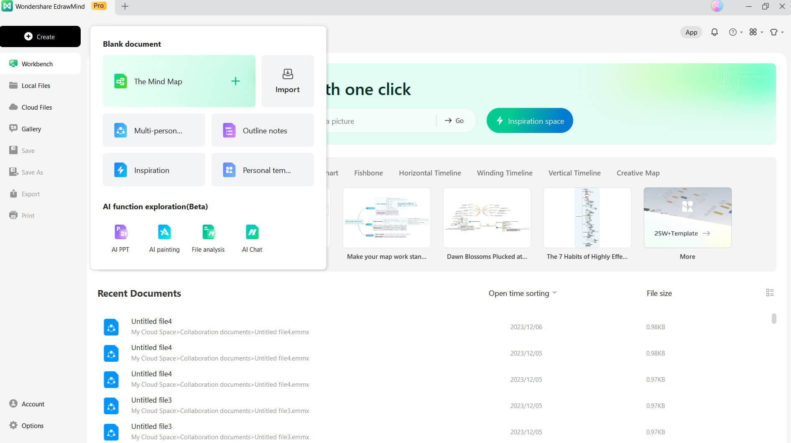
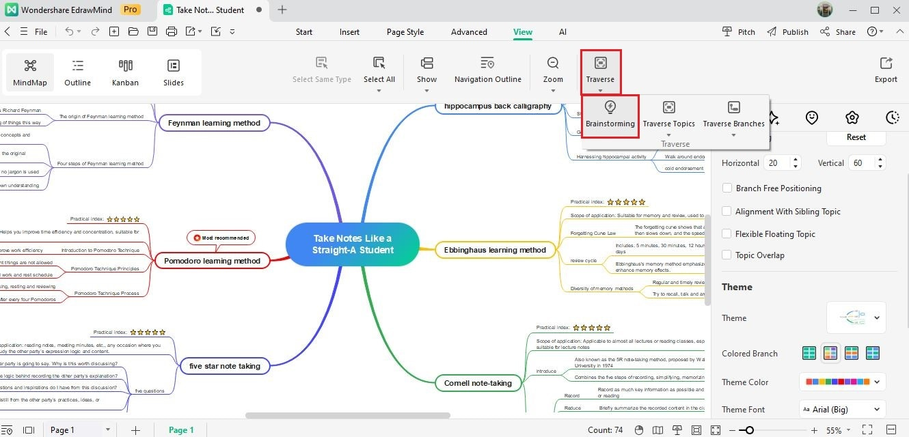
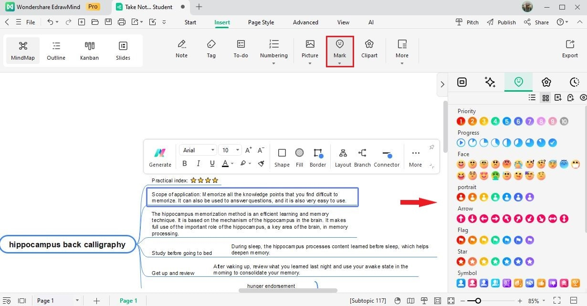

MindMaster 深度盘点：跨 22 种布局的不只是思维导图
从多视图切换到 AI 发散，从头脑风暴到任务看板，一次看清点万兴脑图能力边界里藏着的那些实用场景。
思维导图软件市面上不少，但真正跨了二十多年还在迭代、用户数过了 2500 万的，屈指可数。MindMaster（中文现名万兴脑图、国际版 EdrawMind，三个名字指同一个东西）是其中存在感很强的一位——它的定位早就不是"画一张图"那么简单，而是把想法、笔记、任务三类信息统一装进一个结构化容器里，先去它的官网就能感受到这种产品思路。这篇盘点把它的能力面完整铺开，帮你判断它到底值不值得放进自己的工具箱。
布局与视图：一张底图，多种形态
MindMaster 最核心的护城河是同一份内容多形态切换。官方标注了 22 种布局（不同版本页面显示 22 到 26 种，以官方最新版为准），包括思维导图、逻辑图、组织架构图、鱼骨图、时间线、放射图、气泡图等，布局可以一键切换，不需要重新画。但布局只是第一层——真正拉开差距的是五种视图。
导图视图是默认的发散式脑图，大纲视图把同一份内容转成缩进列表，适合快速扫逻辑层级；看板视图把每个节点变成卡片，拖来拖去就能做任务流转；甘特图视图自动按时间轴展开，把脑图变成项目排期；幻灯片视图则是一键把脑图切成演示页，讲课时直接投影就行。
亮点在于这五种视图完全共享同一份数据源——你在导图里加一个节点，看板里立刻多一张卡片，甘特图里自动多一条时间条，不用维护多个版本。对于同时要做"想清楚 → 排计划 → 讲出来"三件事的人来说，这一层节省的切换成本是实打实的。
场景上，学生做课堂笔记可以先用大纲视图快速打字，再切导图视图整理结构；产品经理写需求文档可以先在导图里发散，切看板视图排优先级，再切甘特图排里程碑。一张底图走到底，不用在不同工具之间来回搬运。

头脑风暴：先倒后收的两段式创作
多数脑图工具的创作流是"边想边结构化"——每加一个节点就在给想法套框架，这在发散阶段反而会卡住。MindMaster 的头脑风暴模式把发散和收拢拆成两个独立阶段：先在一个自由空间里不加判断地倾倒想法，再收拢归类成正式导图结构。
流程上很简单：进入头脑风暴入口，给自己 10 到 15 分钟限时倾倒，想到什么记什么，不评估、不整理、不删改；时间到了把散落的想法往中心主题下挂，相近的合并，无关的先搁置；结构出来后切回导图视图继续细化，需要排期的直接转看板视图。
团队场景下配合在线协作文件，多人同时在同一张图里添加想法，实时可见彼此的光标和节点。主持人可以开启观察者模式跟看某个成员的操作视角，散会前就能得到一张结构化的成果图。
三个容易踩的坑值得单独说：边记边评会让发散阶段的产出量立刻掉一半，评判必须留给收拢阶段；追求一次到位会让人在第二轮收拢时沮丧——正常流程，别卡自己；忘存档是风暴现场的常见失误，结束先保存，整理版另存一份。

图标标记与标签：从纯导图到任务管理的跨越
图标标记（Mark）和标签（Tag）是 MindMaster 里最容易被忽略、但重度使用时最有威力的一组功能。它们分工明确：图标标记是挂在节点上的小图标（优先级旗子、表情、进度符号），管的是"重要程度一眼可见"；标签是节点上的文字标签组，管的是"按维度筛选和归类"。一个管视觉，一个管检索。
图标标记的使用门槛极低——选中主题，打开图标栏，点选图标即挂上，再点一次取消。官方提供多组内置图标，还支持自定义上传。常用的是优先级（星标、旗子）、进度（勾选）、情绪（表情）。标签稍微复杂一点：选中主题插入标签，输入文字，同一主题可以挂多个标签。
标签的真正威力在组合筛选。举个例子：任务图里的每个节点挂一个"本周"或"下周"的标签，再挂一个"重要"或"常规"的标签，检索时就能跨分支把"本周 + 重要"两维交集挑出来。配合图标标记的状态流转（待办 / 进行中 / 完成），一张导图立刻变成简易项目管理板。
克制提醒：图标和标签都是元数据，多了就是噪音。一条经验是每个主题最多挂 1 个状态类图标 + 2 个标签，再多的信息放进注释里。

AI 创作：不只帮你写导图
MindMaster 的 AI 能力覆盖了从生成到发散到解析的全链路。最常用的三个场景：输入一句话生成导图骨架（比如"帮我做一份季度工作总结的大纲"）、长文档解析成结构化导图（上传一份 PDF 让 AI 自动拆解层级）、让 AI 针对某个分支继续发散（思路枯竭时的场外救兵）。
亮点在于 AI 输出之后不是固定的——生成的导图骨架可以自由调整结构，发散出来的分支可以挑拣后收拢进正式内容，解析出来的文档节点可以重新排序。不像某些 AI 工具输出完就锁死，MindMaster 的 AI 更像一个辅助队友，而不是自动完成者。AI 的全部能力边界和进阶玩法可以参考MindMaster文档里的脑图 AI 创作章节。
AI 的一个实用技巧是配合头脑风暴模式使用：当自己的 15 分钟限时倾倒结束后，让 AI 接着某几个分支再各自发散 5 个可能，把 AI 输出当成"不知疲倦的场外队员"，再一起收拢。
多端协同：常驻桌面、轻量网页、随身移动
MindMaster 的多端覆盖是它作为主力工具的重要理由——Windows、macOS、Linux 桌面客户端的安装包从官方下载就可以拿到，iOS、Android 移动 App 各商店都有，还有浏览器直接打开的网页版，文件走云端同步，三个版本共享同一套账号体系。
桌面版是主力。本地运行，大图流畅，离线可用，全功能解锁。网页版是补充：零安装，浏览器直接打开，适合公用电脑、临时查看分享链接、已有云文件的小改动。多人实时协同的原生主场也在网页版——多人同时编辑时光标和节点实时同步，主持人的观察者模式体验在线上最顺畅。移动 App 则是随身延伸：带语音输入和听导图功能，课间或通勤时随时补节点。
经验法则很简单：常驻主力机装桌面版，临时与协作场景用网页版，出门带 App，三者之间文件无缝流转，不存在哪个版本编辑了、另一个版本看不到的情况。
短板也要说
横向盘点不能只说优点，MindMaster 的几个局限是真实存在的：
- 免费版标签额度有限：一个标签组最多 5 个标签，重度做任务管理前需要看看会员版的差距。
- 网页版性能受浏览器影响：开太多标签时画布性能会下降，大图重度编辑还是建议关掉多余标签或直接换桌面端。
- 功能命名随版本变化：检索资料时会遇到 MindMaster、亿图脑图、万兴脑图、EdrawMind 四个名字指同一款软件，菜单也可能随版本变动，遇到对不上时以官方最新版为准。
- 导出格式高级项在桌面端更全：网页版和移动版支持的导出种类比桌面端少一些，正式产出建议在桌面端收尾。
什么样的人该用它
说了这么多能力，最后给个画像判断标准——如果你属于以下两三类人群，MindMaster 大概率能成为你的主力工具：
- 学生群体：做课堂笔记、整理知识点，大纲视图快速打字再切导图整理结构，移动端还带语音输入和听导图功能，复习时能换一种方式过一遍。
- 教师与讲师：备课、授课演示，直接把导图切成幻灯片放给全班看，头脑风暴模式可以用来引导课堂讨论。
- 职场核心岗位：产品经理的需求拆解、项目经理的排期跟进、运营的选题规划——五种视图切换可以接住从想法到执行的完整链路，甘特图和看板视图能把脑图变成任务板。
- 内容创作者：选题整理、大纲写作、内容规划，AI 发散可以帮你突破选题瓶颈，信息图输出能直接用作封面或配图。
MindMaster 的底层逻辑是"结构化容器"——它不只是帮你画一张图，而是把你脑子里的想法、手边的笔记、要跟进的任务，统一装进一个可以在不同形态之间自由切换的空间里。如果你曾经在"想清楚 → 排计划 → 讲出来"这三步之间来回搬运信息，值得给它一个机会。关于这款软件的完整资料，我在GitHub、Gitee 和 GitCode 三个平台都同步了，国内访问选 Gitee 或 GitCode 会更顺畅。